전산응용토목제도기능사 (2015-10-10 기출문제)
1과목: 토목제도(CAD)
1. 단철근 직사각형보에서 단면의 폭이 400mm, 유효깊이가 500mm, 인장 철근량이 1500mm2일 때 인장철근의 철근비는?
- 0.0075
- 0.08
- 0.075
- 0.01
(정답률: 53%)

2. 콘크리트에 대한 설명으로 옳지 않은 것은?
- 공기연행 콘크리트는 철근과의 부착강도가 저하되기 쉽다.
- 레디믹스트 콘크리트는 현장에서 워커빌리티 조절이 어렵다.
- 한중콘크리트는 시공 시 하루 평균기온이 영하 4°C 이하인 경우에 시공한다.
- 서중콘크리트는 시공 시 하루 평균기온이 영상 25°C를 초과하는 경우에 시공한다.
(정답률: 60%)
3. 보통 콘크리트와 비교되는 고강도 콘크리트용 재료에 대한 설명으로 옳은 것은?
- 단위 시멘트량을 작게 하여 배합한다.
- 물-시멘트비를 크게 하여 시공한다.
- 고성능 감수제는 사용하지 않는다.
- 골재는 내구성 이 큰 골재를 사용한다.
(정답률: 61%)
4. D25 철근을 사용한 90°표준갈고리는 90°구부린 끝에서 최소 얼마 이상 더 연장하여야 하는가? (단, db는 철근의 공칭 지름)
- 6db
- 9db
- 12db
- 15db
(정답률: 73%)
5. 압축부재의 축방향 주철근이 나선철근으로 둘러싸인 경우에 주철근의 최소 개수는?
- 6개
- 8개
- 9개
- 10개
(정답률: 64%)
6. 폭 50cm, 유효깊이 80cm인 직사각형 부재에서 콘크리트 및 철근의 강도가 fck = 25MPa, fy = 400MPa일 때, 휨부재의 최소 철근량은 얼마 이상이어야 하는가?
- 5.60cm2
- 8.00cm2
- 12.50cm2
- 14.00cm2
(정답률: 33%)
7. 철근의 배치에서 간격 제한에 대한 기준으로 빈칸에 알맞은 것은?
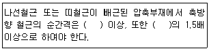
- 25㎜ - 철근 공칭 지름
- 40㎜ - 철근 공칭 지름
- 25㎜ - 굵은 골재의 최대 공칭 치수
- 40㎜ - 굵은 골재의 최대 공칭 치수
(정답률: 44%)
8. 현장치기 콘크리트에서 흙에 접하거나 옥외의 공기에 직접 노출되는 D16 이하의 철근의 최소 피복두께는?
- 40㎜
- 50㎜
- 60㎜
- 70㎜
(정답률: 71%)
9. 휨 부재에 대하여 강도설계법으로 설계할 때의 가정으로 옳지 않은 것은?
- 철근과 콘크리트 사이의 부착은 완전하다.
- 콘크리트 압축연단의 극한 변형률은 0.003이다.
- 콘크리트 및 철근의 변형률은 중립축으로 부터의 거리에 비례한다.
- 휨 부재의 극한 상태에서 휨 모멘트를 계산할 때에는 콘크리트의 압축과 인장강도를 모두 고려하여야 한다.
(정답률: 58%)
10. 2개 이상의 철근을 묶어서 사용하는 다발철근의 사용방법으로 옳지 않은 것은?
- 다발철근의 지름은 등가단면적으로 환산된 한 개의 철근지름으로 보아야 한다.
- 다발철근으로 사용하는 철근의 개수는 4개 이하이어야 한다.
- 스터럽이나 띠철근으로 둘러싸야 한다.
- 보에서 D25를 초과하는 철근은 다발로 사용할 수 없다.
(정답률: 63%)
11. 일반 콘크리트 휨 부재의 크리프와 건조수축에 의한 추가 장기처짐을 근사식으로 계산할 경우 재하기간 10년에 대한 시간경과계수(ε)는?
- 1.0
- 1.2
- 1.4
- 2.0
(정답률: 46%)
12. 콘크리트의 워커빌리티에 영향을 끼치는 요소로 옳지 않은 것은?
- 시멘트의 분말도가 높을수록 워커빌리티가 좋아진다.
- AE제, 감수제 등의 혼화제를 사용하면 워커빌리티가 좋아진다.
- 시멘트량에 비해 골재의 양이 많을수록 워커빌리티가 좋아진다.
- 단위수량이 적으면 유동성이 적어 워커빌리티가 나빠진다.
(정답률: 59%)
13. 굳지 않은 콘크리트의 반죽 질기를 측정하는 데 사용되는 시험은?
- 자르 시험
- 브리넬 시험
- 비비 시험
- 로스앤젤레스 시험
(정답률: 76%)
14. 강도설계법으로 단철근 직사각형 보를 설계할 때, 콘크리트의 설계강도가 21MPa, 철근의 항복강도가 240MPa인 경우 균형 철근비는? (단, 계수 β1은 0.85이다.)
- 0.041
- 0.045
- 0.⑤2
- 0.⑤6
(정답률: 47%)
15. 철근기호의 SD 300에서 300의 의미는?
- 철근의 단면적
- 철근의 항복강도
- 철근의 연신율
- 철근의 공칭지름
(정답률: 62%)
16. 시멘트의 분말도에 관한 설명으로 옳지 않은 것은?
- 시멘트의 입자가 가늘수록 분말도가 높다.
- 시멘트 입자의 가는 정도를 나타내는 것을 분말도라 한다.
- 시멘트의 분말도가 높으면 조기강도가 커진다.
- 시멘트의 분말도가 높으면 균열 및 풍화가 생기지 않는다.
(정답률: 66%)
17. 인장을 받는 이형철근 정착에서 전경량콘크리트의 fsp(쪼갬인장강도)가 주어지지 않은 경우 보정계수 값은?
- 0.75
- 0.8
- 0.85
- 1.2
(정답률: 42%)
18. 시방배합과 현장배합에 대한 설명으로 옳지 않은 것은?
- 시방배합에서 골재의 함수상태는 표면건조포화 상태를 기준으로 한다.
- 시방배합에서 굵은골재와 잔골재를 구분하는 기준은 10㎜체이다.
- 시방배합을 현장배합으로 고치는 경우 골재의 표면수량과 입도를 고려한다.
- 시방배합을 현장배합으로 고치는 경우 혼화제를 희석시킨 희석수량 등을 고려하여야 한다.
(정답률: 66%)
19. 단철근 직사각형보를 강도 설계법으로 해석할 때 최소 철근량 이상으로 인장철근을 배치하는 이유는?
- 처짐을 방지하기 위하여
- 전단파괴를 방지하기 위하여
- 연성파괴를 방지하기 위하여
- 취성파괴를 방지하기 위하여
(정답률: 50%)
20. 블리딩을 작게 하는 방법으로 옳지 않은 것은?
- 분말도가 높은 시멘트를 사용한다.
- 단위 수량을 크게 한다.
- 감수제를 사용한다.
- AE제를 사용한다.
(정답률: 63%)
2과목: 철근콘크리트
21. 토목 구조물을 설계할 때 고려해야 할 사항과 거리가 먼 것은?
- 구조의 안전성
- 사용의 편리성
- 건설의 경제성
- 재료의 다양성
(정답률: 77%)
22. 트러스의 종류 중 주트러스로는 잘 쓰이지 않으나, 가로 브레이싱에 주로 사용되는 형식은?
- K 트러스
- 프랫(pratt) 트러스
- 하우(howe) 트러스
- 워런(warren) 트러스
(정답률: 69%)
23. 프리스트레스트 콘크리트 부재 제작 방법 중 콘크리트를 타설, 경화한 후에 긴장재를 넣고 긴장하는 방법은?
- 프리캐스트 방식
- 포스트텐션 방식
- 프리텐션 방식
- 롱라인 방식
(정답률: 62%)
24. 도로교를 설계할 때 하중의 종류를 크게 지속하는 하중과 변동하는 하중으로 구분할 때, 지속하는 하중에 해당되는 것은?
- 충격
- 풍하중
- 제동하중
- 프리스트레스힘
(정답률: 45%)
25. 상부 수직 하중을 하부 지반에 분산시키기 위해 저면을 확대시킨 철근 콘크리트판은?
- 비내력벽
- 슬래브판
- 확대 기초판
- 플랫 플레이트
(정답률: 63%)
26. 폭 b=300mm이고, 유효높이 d=500mm를 가진 단철근 직사각형보가 있다. 이 보의 철근비가 0.01일 때 인장철근량은?
- 1000mm2
- 1500mm2
- 2000mm2
- 3000mm2
(정답률: 78%)
27. 2개 이상의 기둥을 1개의 확대 기초로 지지 하도록 만든 기초는?
- 경사 확대 기초
- 연결 확대 기초
- 독립 확대 기초
- 계단식 확대 기초
(정답률: 69%)
28. 교량의 구성을 바닥판, 바닥틀, 교각, 교대, 기초 등으로 구분할 때, 바닥틀에 대한 설명으로 옳은 것은?
- 상부 구조로서 사람이나 차량 등을 직접 받쳐주는 포장 및 슬래브 부분을 뜻한다.
- 상부 구조로서 바닥판에 실리는 하중을 받쳐서 주형에 전달해주는 부분을 뜻한다.
- 하부 구조로서 상부 구조에서 전달되는 하중을 기초로 전해주는 부분을 뜻한다.
- 하부 구조로서 상부 구조에서 전달되는 하중을 지반으로 전해주는 부분을 뜻한다.
(정답률: 49%)
29. 철근 콘크리트를 널리 이용하는 이유가 아닌 것은?
- 자중이 크다.
- 철근과 콘크리트가 부착이 매우 잘 된다.
- 철근과 콘크리트는 온도에 대한 열팽창 계수가 거의 같다.
- 콘크리트 속에 묻힌 철근은 녹이 슬지 않는다.
(정답률: 60%)
30. 기둥과 같이 압축력을 받는 부재가 압축력에 의해 휘거나 파괴되는 현상을 무엇이라 하는가?
- 피로
- 좌굴
- 연화
- 쇄굴
(정답률: 70%)
31. 어떤 토목 구조물에 대한 특성을 설명한 것인가?
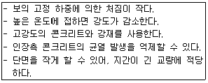
- H형 강 구조
- 무근 콘크리트
- 철근 콘크리트
- 프리스트레스트 콘크리트
(정답률: 63%)
32. 구조 재료로서 강재의 특징이 아닌 것은?
- 구조 해석이 단순하다.
- 부재를 개수하거나 보강하기 쉽다.
- 다양한 형상과 치수를 가진 구조로 만들 수 있다.
- 긴 지간의 교량, 고층 건물에 유효하게 쓰인다.
(정답률: 45%)
33. 두께에 비하여 폭이 넓은 판 모양의 구조물로 지지 조건에 의한 주철근 구조에 따라 2가지로 구분되는 것은?
- 확대기초
- 슬래브
- 기둥
- 옹벽
(정답률: 72%)
34. 철근 콘크리트에서 중립축에 대한 설명으로 옳은 것은?
- 응력이 “0”이다.
- 인장력이 압축력보다 크다.
- 압축력이 인장력보다 크다.
- 인장력, 압축력이 모두 최대값을 갖는다.
(정답률: 57%)
35. 축방향 철근을 나선 철근으로 촘촘히 둘러 감은 기둥은?
- 합성 기둥
- 띠철근 기둥
- 나선 철근 기둥
- 프리스트레스트 기둥
(정답률: 68%)
36. 문자에 대한 토목제도 통칙으로 옳지 않은 것은?
- 문자의 크기는 높이에 따라 표시한다.
- 숫자는 주로 아라비아 숫자를 사용한다.
- 글자는 필기체로 쓰고 수직 또는 30° 오른쪽으로 경사지게 쓴다.
- 영자는 주로 로마자의 대문자를 사용하나 기호, 그 밖에 특별히 필요한 경우에는 소문자를 사용해도 좋다.
(정답률: 75%)
37. 도면의 표제란에 기입하지 않아도 되는 것은?
- 축척
- 도면명
- 산출물량
- 도면번호
(정답률: 79%)
38. 실제 거리가 120m인 옹벽을 축척 1:1200의 도면에 그릴 때 도면상의 길이는?
- 12㎜
- 100㎜
- 10000㎜
- 120000㎜
(정답률: 57%)
39. 보기의 입체도에서 화살표 방향을 정면으로 할 때 평면도를 바르게 표현한 것은?
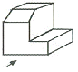
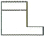
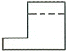
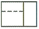
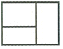
(정답률: 71%)
40. 콘크리트 구조물 제도에서 구조물 전체의 개략적인 모양을 표시한 도면은?
- 단면도
- 구조도
- 상세도
- 일반도
(정답률: 54%)
3과목: 토목일반구조
41. 제도 용지 중 A0도면의 치수는 몇 ㎜인가?
- 841 x 1189
- 594 x 841
- 420 x 594
- 297 x 420
(정답률: 84%)
42. 파선(숨은선)의 사용 방법으로 옳은 것은?
- 단면도의 절단면을 나타낸다.
- 물체의 보이지 않는 부분을 표시하는 선이다.
- 대상물의 보이는 부분의 겉모양을 표시한다.
- 부분 생략 또는 부분 단면의 경계를 표시 한다.
(정답률: 80%)
43. 판형재의 치수표시에서 강관의 표시 방법으로 옳은 것은?
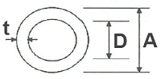
- ϕA×t
- D×t
- ϕD×t
- A×t
(정답률: 69%)
44. 그림과 같은 절토면의 경사 표시가 바르게 된 것은?
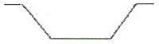
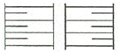
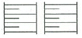
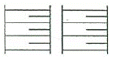
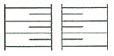
(정답률: 78%)
45. 다음 중 그림을 그리는 영역을 한정하기 위한 윤곽선으로 알맞은 것은?
- 0.3mm 굵기의 실선
- 0.5mm 굵기의 파선
- 0.7mm 굵기의 실선
- 0.9mm 굵기의 파선
(정답률: 54%)
46. 제도 용지의 폭과 길이의 비는 얼마인가?
- 1 : √5
- 1 : √3
- 1 : √2
- 1 : 1
(정답률: 85%)
47. 투시도에서 물체가 기면에 평행으로 무한히 멀리 있을 때 수평선 위의 한 점으로 모이게 되는 점은?
- 사점
- 소점
- 정점
- 대점
(정답률: 63%)
48. 네트워크 보안을 강화하는 방법으로 옳지 않은 것은?
- 해킹
- 암호화
- 방화벽 설치
- 인트라넷 구축
(정답률: 84%)
49. 그림에서와 같이 주사위를 바라보았을 때 우측면도를 바르게 표현한 것은? (단, 투상법은 제3각법이며, 물체의 모서리 부분의 표현은 무시한다.)
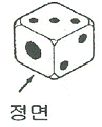
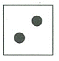
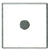
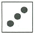
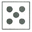
(정답률: 81%)
50. 구조물 설계에서 도면 작도 방법에 대한 기본 사항으로 옳지 않은 것은?
- 단면도는 실선으로 주어진 치수대로 정확히 그린다.
- 철근 치수 및 기호를 표시하고 누락되지 않도록 주의한다.
- 단면도에 배근될 철근 수량과 간격을 정확하게 그린다.
- 일반적으로 일반도를 먼저 그리고 단면도를 가장 나중에 그리는 것이 편하다.
(정답률: 74%)
51. 하천 측량 제도에 포함되지 않는 것은?
- 평면도
- 상세도
- 종단면도
- 횡단면도
(정답률: 49%)
52. 재료단면의 경계표시 중 지반면(흙)을 나타낸 것은?
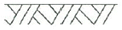
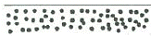
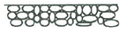
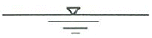
(정답률: 86%)
53. 캐드 명령어 ‘@20,30’의 의미는?
- 이전 점에서부터 Y축 방향으로 20, X축 방향으로 30만큼 이동된다는 의미
- 이전 점에서부터 X축 방향으로 20, Y축 방향으로 30만큼 이동된다는 의미
- 원점에서부터 Y축 방향으로 20, X축 방향으로 30만큼 이동된다는 의미
- 원점에서부터 X축 방향으로 20, Y축 방향으로 30만큼 이동된다는 의미
(정답률: 65%)
54. 대칭인 도형은 중심선에서 한쪽은 외형도를 그리고 그 반대쪽은 무엇을 표시하는가?
- 정면도
- 평면도
- 측면도
- 단면도
(정답률: 65%)
55. 단면도의 절단면에 가는 실선으로 규칙적으로 나열한 선은?
- 해칭선
- 절단선
- 피치선
- 파단선
(정답률: 64%)
56. KS 토목제도 통칙에서 척도의 비가 1:1보다 작은 척도를 무엇이라 하는가?
- 현척
- 배척
- 축척
- 소척
(정답률: 74%)
57. 투상도법에서 원근감이 나타나는 것은?
- 표고 투상법
- 정투상법
- 사투상법
- 투시도법
(정답률: 47%)
58. 골재의 단면 표시 중 잡석을 나타내는 것은?
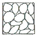
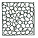
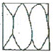
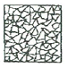
(정답률: 70%)
59. 국제 및 국가별 표준규격 명칭과 기호 연결이 옳지 않은 것은?
- 국제 표준화 기구 - ISO
- 영국 규격 - DIN
- 프랑스 규격 - NF
- 일본 규격 - JIS
(정답률: 72%)
60. 모니터의 해상도를 나타내는 단위는?
- Point
- RGB
- TFT
- DPI
(정답률: 66%)
인장 철근의 단면적은 단면의 폭과 인장 철근의 깊이를 곱한 값입니다. 따라서 인장 철근의 단면적은 400mm x 500mm = 200000mm2입니다.
인장 철근의 개수는 1500mm2 / 200000mm2 = 0.0075입니다.
따라서 인장철근의 철근비는 0.0075입니다.